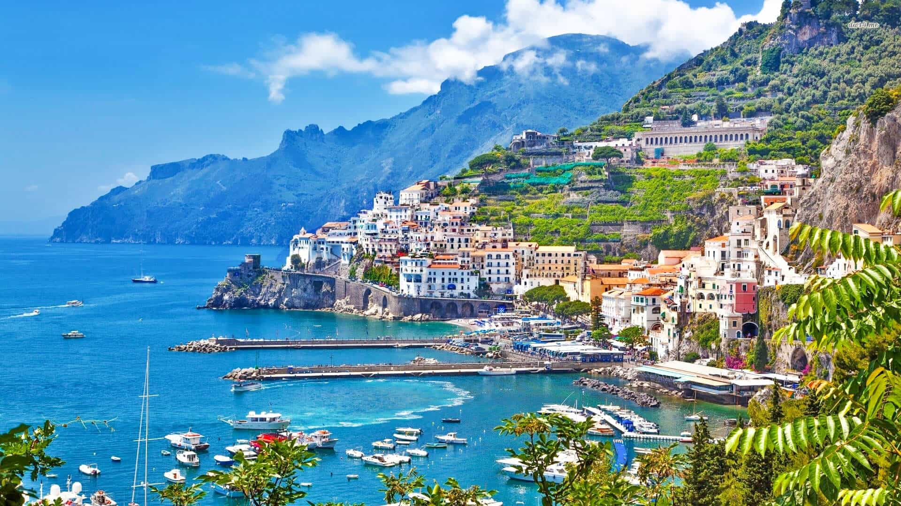

The Amalfi Coast is a 50 kilometre stretch of coastline along the southern edge of the penninsula of Italy. This UNESCO World Heritage Site is a popular holiday destination due to its large cliffs, small scenic beaches and fishing villages that consist of colourful buildings.
The town of Sorrento is the official starting point of the Amalfi Coast, and the most accessible town to get to. There are frequent trains from the Naples train station to the town of Sorrento. Amalfi Coast day trips and excursions normally start from Sorrento, so it is a good town to stay in overnight.
The town of Positano is best known for its beautiful pastel - coloured houses that are on the edges of cliffs off the Mediterranean Sea. Positano is an extremely popular Amalfi Coast town, as it is centrally located and has gorgeous small and sandy beaches. Positano is also one of the few towns on the Amalfi Coast that is known for its shopping. With that said, hotel prices in this coastal town are among the priciest on the coast.
Amalfi is the largest town along the coast and one of the most popular towns to stay in after Positano and Sorrento. The town of Amalfi is also situated aproximately in the middle of the coast, making it a perfect base for day trips to the island of Capri and other towns along the Amalfi Coast.
The town of Salerno is located at the end of the Amalfi Coast, and is a great place to stay. Salerno is a transport hub, directly connected to Rome by train and therefore, it is much easier to travel to than the other Amalfi Coast towns. The beaches in the town of Sorrento are also quite large, making it a popular place for tourists and visiters to stay along the coast.
Visit this page to know about tours and sighseeing in the Amalfi Coast.